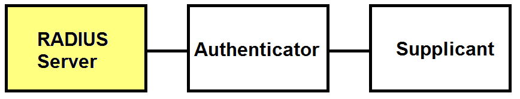
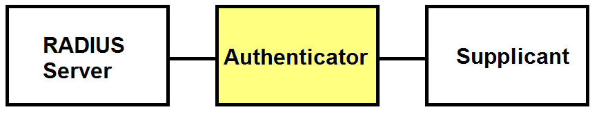

Mobile Authentication Protocol
Wireless Group B:
Tom Blount
José Cubero
Thomas Grainger
Chris Orchard
Brief:
Design and demonstrate a simulation of the implementation of an efficient authentication protocol for mobile networks.
Goals
- Must: Implement an authentication protocol, using a single client, a single access point, and a single server.
- Should: Demonstrate the use of an additional access point and the switching of the client between the two
- Could: Demonstrate fast BSS (802.11r)
- To show the success of these goals using a practical demonstration
802.1x
- Port-based Network Access Control (PNAC)
- Controls access at data link layer (Layer 2), preventing local abuse
- Only gives out an IP address to authenticated clients
- Supports periodic re-authentication
802.1x
802.1X is made up of:
- Suplicant: an application running on the client
- Authenticator: an application running on the access point that communicates with the client and server
- Authentication server: a remote server that holds authentication details (such as usernames and passwords). The de facto standard is to use RADIUS
802.1x
Four main stages:
- Initialization
- Initiation
- Negotiation
- Authentication
RADIUS

RADIUS
- Remote Authentication Dial In User Service
- Provides Authentication, Authorization, and Accounting
- Protocol carries requests and responses
- Access Request
- Access Reject
- Access Accept
Config: Users
#Give access to this user
TomB Cleartext-Password := "What a secure passphrase, eh?"
Reply-Message = "Hello there %{User-Name}! How's it going?"
#Don't give access to this user
TomG Auth-Type := Reject
Reply-Message = "Oh no you don't Grainger. Not again."
Config: Clients
client linuxproj {
ipaddr = 152.78.71.57
secret = testing123
require_message_authenticator = no
#Used to specify a specific Network Access Server type
#(e.g. cisco, multitech, etc.)
nastype = other
}
EAP-TTLS
-
Extensible Authentication Protocol, Tunneled Transport Layer Security
- Is for blah blah
EAP-TTLS

EAP-TTLS
We don't want to send our credentials in plain text. So:
- Verify server's identity using a Certificate
- Initialise a tunnel using "anonymous" credentials
- Then send our actual credentials through the tunnel!
Authenticator

Authenticator
- An application running on the network device, in case of WiFi a wireless access point
- Receives user credentials from the supplicant (username, passwd or digital certificate)
- Forwards them to the authentication server for verification
Authenticator
The HW we have used: Meraki Mini
- 180MHz MIPS CPU (Atheros AR2315 SoC)
- 8MB Flash, 32MB SDRAM
- 60mW 802.11b/g radio
- 10/100 Mbit/s auto-crossover Ethernet port
- Borrowed from the SOWN project at ECS

Supplicant
The supplicant is an entity ... that seeks to be authenticated by an authenticator attached to the other end of that link... In practice, a supplicant is a software application installed on an end-user's computer. The user invokes the supplicant and submits credentials to connect the computer to a secure network. If the authentication is successful, the authenticator typically allows the computer to connect to the network.
- The supplicant must be configured with the access point details.
-
To enable "Fast BSS Transition" (802.11r)
fast-reauthmust be enabled andFT-EAPmust be added as a key management option.
wpa_cli can be used to force a roam.
802.1X Results
Attempting to use the AP as an invalid user:
802.1X Results
Attempting to use the AP as a valid user: